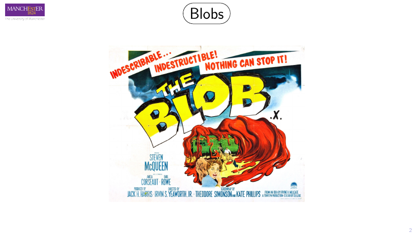
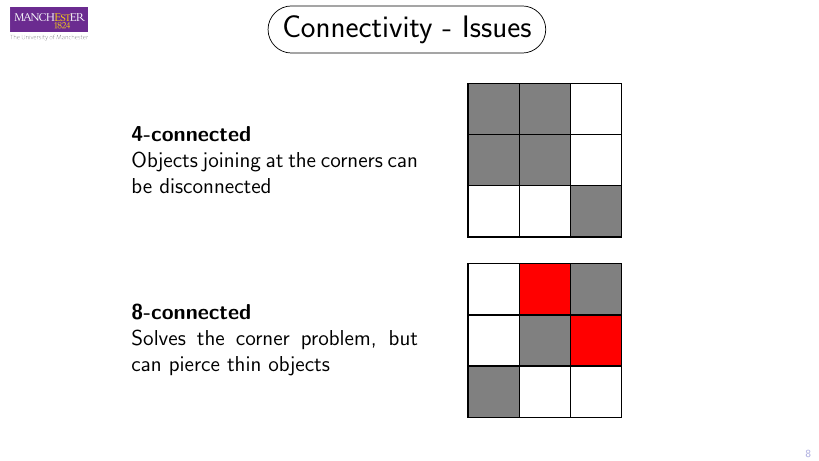
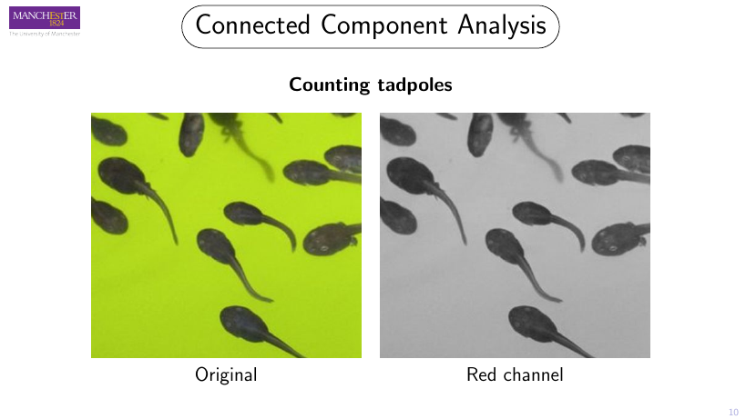
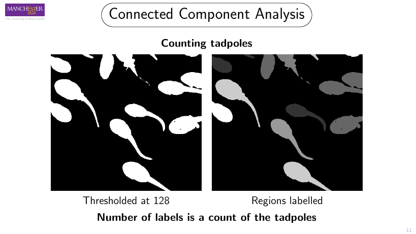
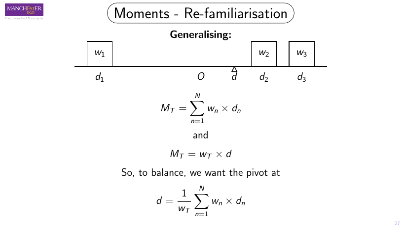
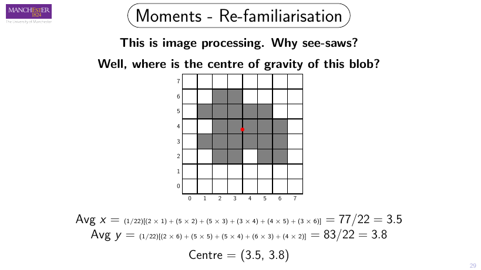
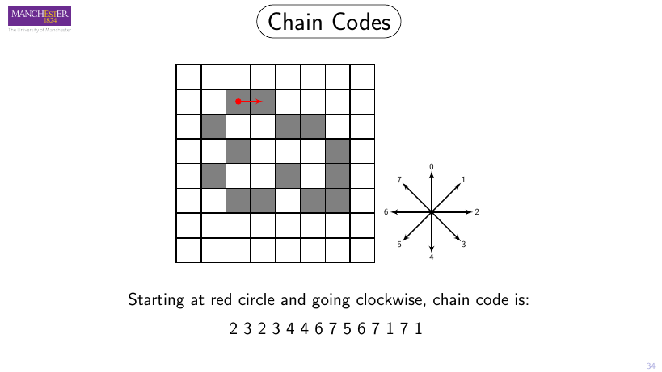
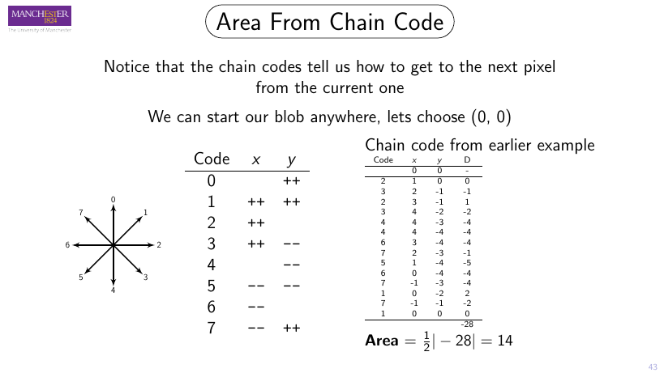
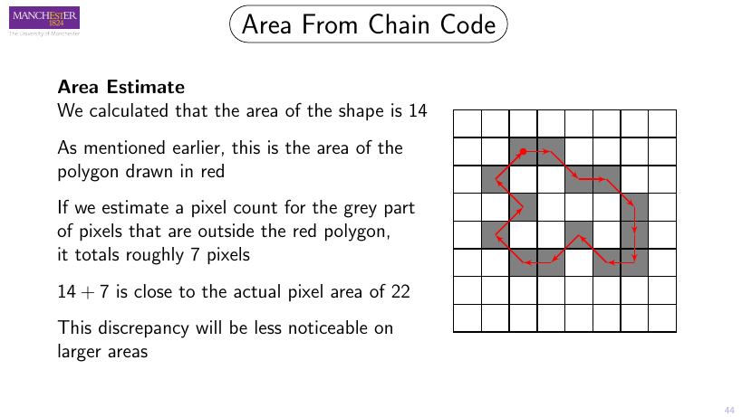
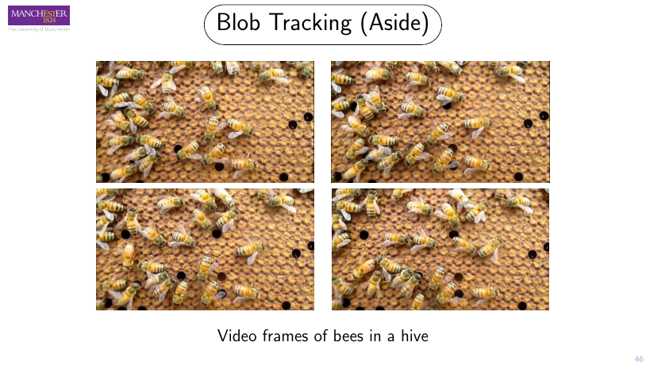

Once an image is thresholded, the real work begins: finding the connected regions, walking their edges, and squeezing out numbers — area, perimeter, orientation — that let a machine recognise and track them.
A blob is a set of pixels that (1) share some property and (2) are connected to one another.
That two-part definition is the whole game. The "property" is whatever lets us say two neighbouring pixels belong to the same object; "connected" is what stitches lone pixels into a single region. The lecture opens — tongue firmly in cheek — with the 1958 sci-fi poster, because a blob really is just an amorphous mass of similar stuff.

Two questions drive blob formation, and a classifier answers them pixel by pixel:
The simplest property. Pixel values collapse to {0,1}; grouping is trivial — same value = same object. This is exactly where Lecture 7 picks up from.
Richer properties build a probability density function of grey values or colours, then a classifier decides membership — useful when a single threshold won't separate things cleanly.
"Connected" needs a definition. A pixel's neighbours are either the 4 sharing an edge, or the 8 sharing an edge or a corner. The choice changes which pixels merge into one blob — and it has real trade-offs.

Also called Region Labelling. Goal: find groups of contiguous pixels and give every separate blob its own integer label. Counting the labels then counts the objects.


Scan again and re-label every pixel using the equivalence table, so each true region ends up with a single consistent label.
The exact grid from slides 15–16. Step through Pass 1 cell by cell, watch the equivalences appear, then resolve.
To describe a blob we first trace its outline. Scan top-to-bottom, left-to-right; the first object pixel is the start O₀, and the background cell to its left is B₀. Then sweep clockwise around the current pixel's neighbours, starting from the backtrack cell: the first object pixel you hit is the next boundary pixel, the background cell just before it becomes the new B.
Stop only when you return to O₀ and the next pixel found is O₁ again — the extra condition handles boundaries that loop back through the start in a different direction.
The blob from slides 17–21. Play the clockwise walk and watch Oₙ step around the 14-pixel border.
Why does an image-processing lecture talk about weights on a plank? Because the centre of gravity of a balanced see-saw and the centroid of a blob are the same calculation: a weighted average of positions.


For a binary image where I(x,y) ∈ {0,1}:
Measuring relative to the centroid (x̄,ȳ) makes the moments position-invariant — slide the blob anywhere and they don't change. Combine low-order moments and you can also recover orientation:
A chain code records a boundary as the sequence of directions you step in as you walk around it — an 8-direction compass, 0 = up, increasing clockwise to 7.
Click a direction (or any code 0–7) to see where it points.

Start anywhere; when you reach the end, continue from the start.
Rotate the shape 90° and the ordinary code changes completely.
14 directions × 3 bits ≈ 5.25 bytes vs 28 bytes for 14 (x,y) pairs.
Take the difference between successive codes (mod 8) and you describe turns rather than absolute directions:
Edit the ordinary code; the differential code is computed live.
Even codes (0,2,4,6) are horizontal/vertical steps of length 1; odd codes (1,3,5,7) are diagonals of length √2 (hypotenuse of a unit right triangle). So with E even codes and D odd codes:
Treat the boundary pixels as polygon vertices. Walk the chain code to recover their (x,y) coordinates, then apply the shoelace sum and halve its absolute value.
The code is converted to coordinates, then the shoelace sum is taken. Matches the slide's answer of 14.


A blob's colour histogram is a powerful descriptor that's independent of area and orientation — typically the H, S components with brightness normalised out. It's exactly what lets a tracker say "that blue jacket is still the same person".

Matching a blob at time t₂ to one at t₁ needs invariant properties (what stays the same?). It's hard: there can be many blobs, and the population changes as blobs enter and leave. With N blobs in one frame and M in the next, comparing every subset is a combinatorial explosion.
For each blob: current location, velocity (distance + direction since last frame) and its invariants.
Use location + velocity to estimate where the blob will be next frame. Kalman and particle filters do this estimation.
Is there a blob near the prediction with the same invariants? If yes, it's a match.
Straight from the course's visual quiz bank (blob description + morphology). Click an answer — it's marked instantly.
Real COMP27112 questions touching blobs, labelling, chain codes, moments and boundaries. Click to reveal a model approach.
Every slide from the lecture (7.1 → 7.3), in order. Click any slide to open it full size.